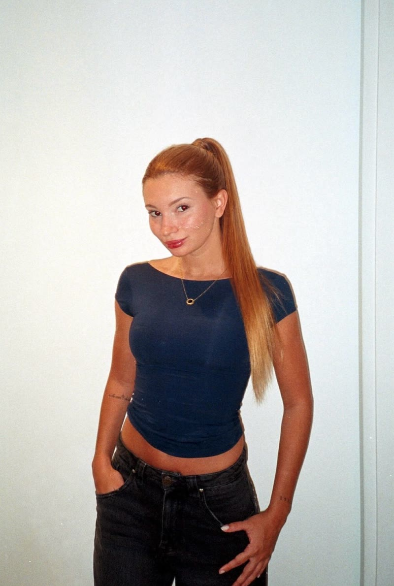

Sobre mim

Sou Beatriz Chianello e estudo Publicidade e Propaganda em Niterói. Desde sempre tenho uma curiosidade quase insistente de entender pessoas: o que pensam, como sentem, por que escolhem. Foi isso que me levou a estudar também Psicologia, duas lentes para olhar comportamento, comunicação e cultura por ângulos diferentes.
Hoje trabalho com social media e criação de conteúdo, entre texto, design e audiovisual. Desenvolvo a comunicação da Bem Morar Arquitetura e do PCD em Movimento, além de projetos pontuais em diferentes formatos. Gosto de acompanhar um projeto desde a ideia e o roteiro até a imagem que vai pro ar.
Muito do meu repertório vem do que eu acompanho por gosto: livros, moda, cinema, fotografia, escrita e cultura visual. Foi desse lugar que nasceu a Fake Blonde Loves You, minha newsletter no Substack, e a vontade de estudar a relação entre moda e audiovisual, que me levou ao curso de Fashion Filmmaking da ESPM. No meu TCC, esses interesses se encontram numa pesquisa sobre como as pessoas interpretam um fashion film pensado para a NARS.
A fotografia analógica também faz parte desse arquivo. Tem coisa que eu só percebo que fotografei quando o filme volta revelado.
Gosto de projetos que deixam espaço para pesquisar, criar e experimentar linguagens, principalmente quando comunicação, imagem e cultura se encontram. Estou aberta a boas ideias, projetos e colaborações.